Empowering Next-Gen Innovators
Student Forge provides the tools, mentorship, and global network needed to turn your academic foundation into a professional legacy.
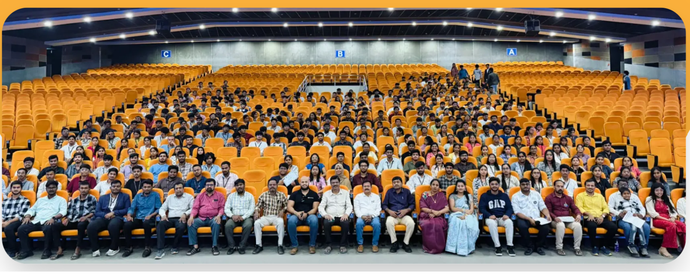
No matter how dark the path is, Student Forge stands beside students at every step toward their dreams.

Mentors from Leading Global Companies
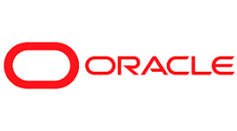
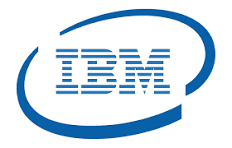
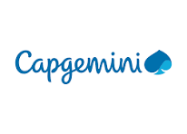
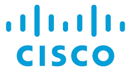
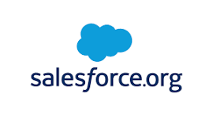
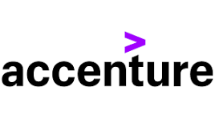
Our Achievements
Celebrating milestones and success stories from our journey of empowering students and startups.
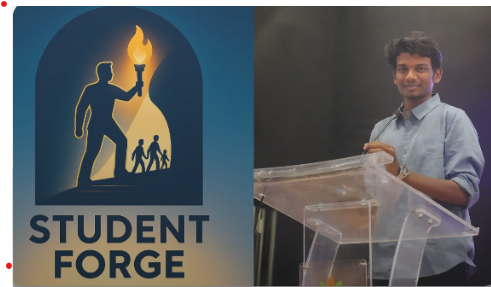
Featured in Startup By DOC
Student Forge was featured in a leading startup publication, highlighting our journey and achievements.
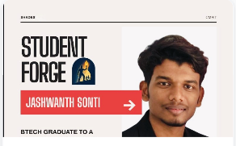
Featured in CMRIT Shades 2026 Magazine
Student Forge was proudly featured in the CMRIT Shades magazine, recognizing our journey and vision.
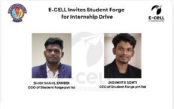
Invited by BITS Pilani E-Cell
Received an invitation to participate in the E-Cell Launchpad Summit 2026.
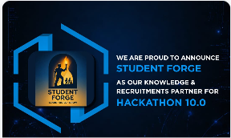
Knowledge Partner at Syadri SMT Hackathon 10.0
Student Forge participated as a knowledge partner in the hackathon, supporting student innovation.
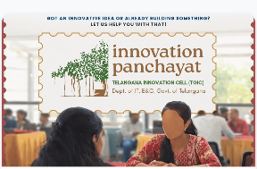
Supported TGIC Innovation Panchayat in Khammam
Student Forge supported innovation activities and helped students connect with opportunities.
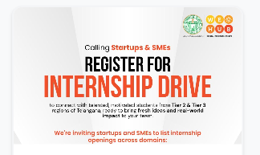
Internship Hiring Partner for VME Hub GIG Internship Drive
Student Forge participated as an internship hiring partner, connecting students with opportunities.
Student Platform
A dedicated platform designed to help students learn, connect, innovate, and grow.
Making a Difference in the Student Community
At Student Forge, we are dedicated to making a positive impact in the community through various programs and initiatives.
3,500+
Students Reached
Our initiatives reached over 3500 students with precise, accessible, and compelling information.
25+
Mentorship Sessions
Student Forge led over 25+ in-person and virtual mentorship programs covering key topics.
450+
Projects Completed
Over 450+ industry-level projects successfully conceptualized and delivered by our interns.
250+
Internships
Student Forge provided 250+ internship opportunities to students across various technical and business domains.
“Redefining the journey from student to innovator through global mentorship and practical excellence.”
The Student Forge Team
CORE PHILOSOPHY
Community Feedback
Voices from our interns across various institutions.
"The mentorship at Student Forge is life-changing. It helped me bridge the gap between college and the real world."
Tikkagari Anirudh
CMR INSTITUTE OF TECHNOLOGY"I've gained immense practical knowledge through the structured programs and community initiatives here."
Vanshika
CMR INSTITUTE OF TECHNOLOGY"A truly user-friendly platform that provides perfect guidance for students transitioning into the tech industry."
Manchikati Sai Charan
CMR INSTITUTE OF TECHNOLOGY"Student Forge offers a unique ecosystem for learning that you simply can't find anywhere else. Highly recommended."
Bandari ramu
KAMALA INSTITUTE OF TECHNOLOGY"The programs are well-balanced and clearly structured, providing a solid foundation for any aspiring innovator."
Sreeja Reddy Yalam
CMR INSTITUTE OF TECHNOLOGY"I feel much more confident in my professional skills thanks to the constant support from the SF community."
Pasala George Joseph
CMR INSTITUTE OF TECHNOLOGY"Student Forge provides incredible resources for mastering Next.js, AI/ML, and everything in between."
Navadeep
KIT KARIMNAGAR"One of the best professional development platforms. I've enjoyed every moment of my journey here."
Kacham shanmukh
CMR INSTITUTE OF TECHNOLOGY"Extremely helpful in evaluating my true potential and identifying the right career path in technical domains."
Sanjana Guntuka
KAMALA INSTITUTE OF TECHNOLOGY"This platform perfectly exposes us to the competitive world and gives us the skills to thrive in it."
Kalyan Janjirala
OTHER INSTITUTIONS"Everything about Student Forge is designed to help students grow. It's been a truly transformative experience."
Vishwanath Arnitha
KIT KARIMNAGAR"The perfect place to strengthen full stack fundamentals while working on real projects and global mentorship."
Akshitha Mandala
KIT KARIMNAGAR"Student Forge provides incredible resources for mastering Next.js, AI/ML, and everything in between."
Navadeep
KIT KARIMNAGARReady to Forge Your Future?
Join thousands of students who are already bridging the gap between academic theory and industry excellence.